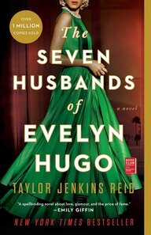
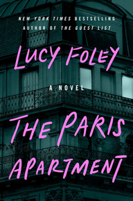
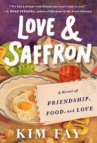

General Fiction Books

 4.7/5.0
4.7/5.0
The Seven Husbands of Evelyn Hugo
~ by Taylor Jenkins Reid
Aging and reclusive Hollywood movie icon Evelyn Hugo is finally ready to tell the truth about her glamorous and scandalous life. But when she chooses unknown magazine reporter Monique Grant for the job, no one is more astounded than Monique herself. Why her? Why now?

4.3/5.0
The Paris Apartment
~ by Lucy Foley
Everyone's a neighbor. Everyone's a suspect. And everyone knows something they're not telling....

4.7/5.0
Love & Saffron: A Novel of Friendship, Food, and Love
~ by Kim Fay
A brief respite from our chaotic world, Love & Saffron is a gem of a novel, a reminder that food and friendship are the antidote to most any heartache, and that human connection will always be worth creating.The Atlas Six
~ by Olivie Blake
The Alexandrian Society, caretakers of lost knowledge from the greatest civilizations of antiquity, are the foremost secret society of magical academicians in the world. Those who earn a place among the Alexandrians will secure a life of wealth, power, and prestige beyond their wildest dreams, and each decade, only the six most uniquely talented magicians are selected to be considered for initiation....Grievers
~ by Adrienne Maree Brown
Dune's mother is patient zero of a mysterious illness that stops people in their tracks--in mid-sentence, mid-action, mid-life--casting them into a nonresponsive state from which no one recovers.Dune must navigate poverty and the loss of her mother as Detroit's hospitals, morgues, and graveyards begin to overflow.
The Paris Library
~ by Janet Skeslien Charles
Paris, 1939: Young and ambitious Odile Souchet seems to have the perfect life with her handsome police officer beau and a dream job at the American Library in Paris. When the Nazis march into the city, Odile stands to lose everything she holds dear, including her beloved library.Together with her fellow librarians, Odile joins the Resistance with the best weapons she has: books. But when the war finally ends, instead of freedom, Odile tastes the bitter sting of unspeakable betrayal.
Nona the Ninth
~ by Tamsyn Muir
The whole city is falling to pieces. A monstrous blue sphere hangs on the horizon, ready to tear the planet apart. Blood of Eden forces have surrounded the last Cohort facility and wait for the Emperor Undying to come calling.Their leaders want Nona to be the weapon that will save them from the Nine Houses. Nona would prefer to live an ordinary life with the people she loves, with Pyrrha and Camilla and Palamedes, but she also knows that nothing lasts forever.
And each night, Nona dreams of a woman with a skull-painted face...
The Three-Body Problem
~ by Cixin Liu
Set against the backdrop of China's Cultural Revolution, a secret military project sends signals into space to establish contact with aliens. An alien civilization on the brink of destruction captures the signal and plans to invade Earth.Meanwhile, on Earth, different camps start forming, planning to either welcome the superior beings and help them take over a world seen as corrupt, or to fight against the invasion. The result is a science fiction masterpiece of enormous scope and vision.
House of Sky and Breath
~ by Sarah J. Maas
he Asteri have kept their word so far, leaving Bryce and Hunt alone. But with the rebels chipping away at the Asteri's power, the threat the rulers pose is growing. As Bryce, Hunt, and their friends get pulled into the rebels' plans, the choice becomes clear: stay silent while others are oppressed, or fight for what's right. And they've never been very good at staying silent....My Year of Rest and Relaxation
~ by Ottessa Moshfegh
From one of our boldest, most celebrated new literary voices, a novel about a young woman's efforts to duck the ills of the world by embarking on an extended hibernation with the help of one of the worst psychiatrists in the annals of literature and the battery of medicines she prescribes.